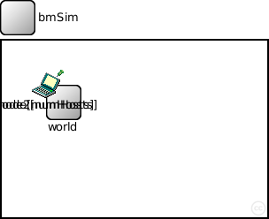
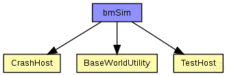
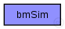

This documentation is released under the Creative Commons license
This documentation is released under the Creative Commons license(no description)
The following diagram shows usage relationships between types. Unresolved types are missing from the diagram. Click here to see the full picture.
The following diagram shows inheritance relationships for this type. Unresolved types are missing from the diagram. Click here to see the full picture.
| Name | Type | Default value | Description |
|---|---|---|---|
| playgroundSizeX | double |
x size of the area the nodes are in (in meters) |
|
| playgroundSizeY | double |
y size of the area the nodes are in (in meters) |
|
| playgroundSizeZ | double |
z size of the area the nodes are in (in meters) |
|
| numHosts | double |
total number of hosts in the network |
| Name | Value | Description |
|---|---|---|
| isNetwork | ||
| display | bgb=$playgroundSizeX,$playgroundSizeY,white,,;bgp=10,10 |
| Name | Type | Default value | Description |
|---|---|---|---|
| world.coreDebug | bool |
debug switch for the base framework |
|
| world.useTorus | bool |
use the playground as torus? |
|
| world.use2D | bool |
use a 2-dimensional world? |
|
| node.blackboard.coreDebug | bool |
debug switch for the base framework |
|
| node.mobility.x | double |
starting point of the host |
|
| node.mobility.y | double | ||
| node.mobility.z | double | ||
| node.mobility.outX | double |
point outside playground |
|
| node.mobility.outY | double | ||
| node.mobility.outZ | double | ||
| node2.blackboard.coreDebug | bool |
debug switch for the base framework |
|
| node2.mobility.coreDebug | bool |
debug switch for the core framework |
network bmSim { parameters: double playgroundSizeX @unit(m); // x size of the area the nodes are in (in meters) double playgroundSizeY @unit(m); // y size of the area the nodes are in (in meters) double playgroundSizeZ @unit(m); // z size of the area the nodes are in (in meters) double numHosts; // total number of hosts in the network @display("bgb=$playgroundSizeX,$playgroundSizeY,white,,;bgp=10,10"); submodules: world: BaseWorldUtility { parameters: playgroundSizeX = playgroundSizeX; playgroundSizeY = playgroundSizeY; playgroundSizeZ = playgroundSizeZ; } // channelcontrol: ConnectionManager; // display: "p=60,30;i=eye14"; node[numHosts]: TestHost { parameters: numHosts = numHosts; @display("p=50,50;i=laptop"); } node2[numHosts]: CrashHost { parameters: numHosts = numHosts; @display("p=50,50;i=laptop"); // connections nocheck: // all connections and gates are to be generated dynamically } }
This documentation is released under the Creative Commons license